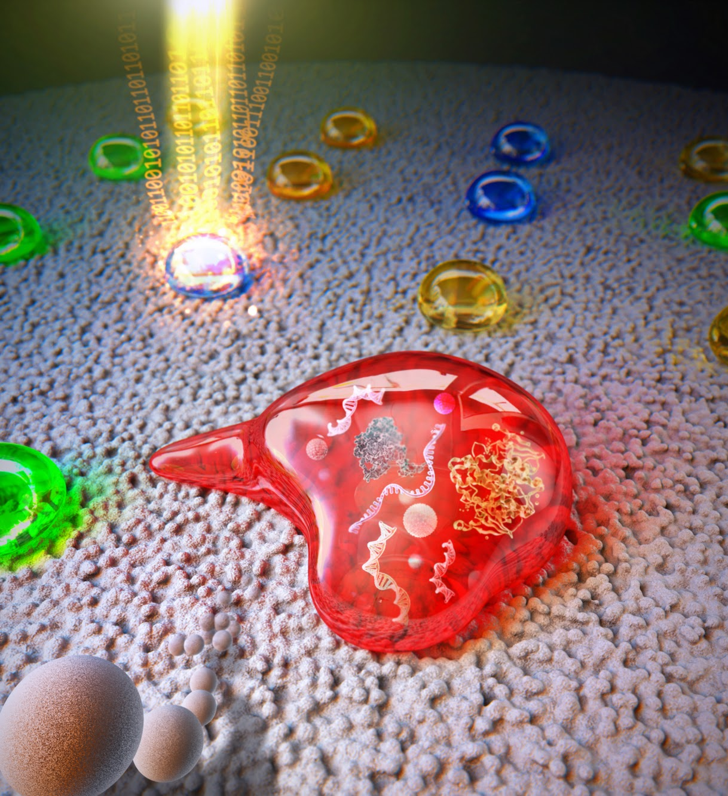
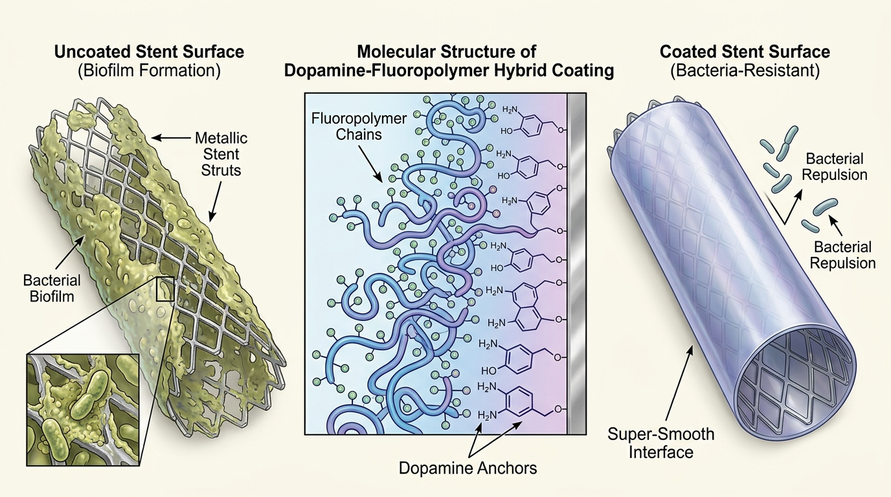
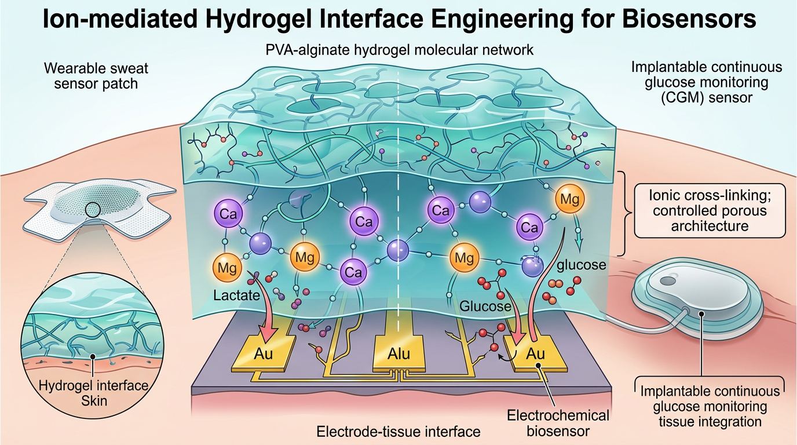
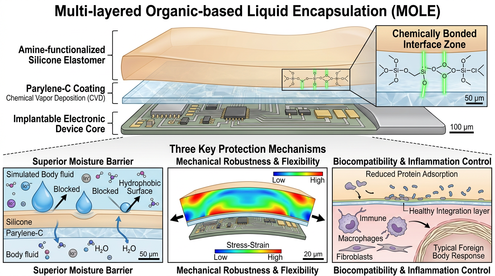
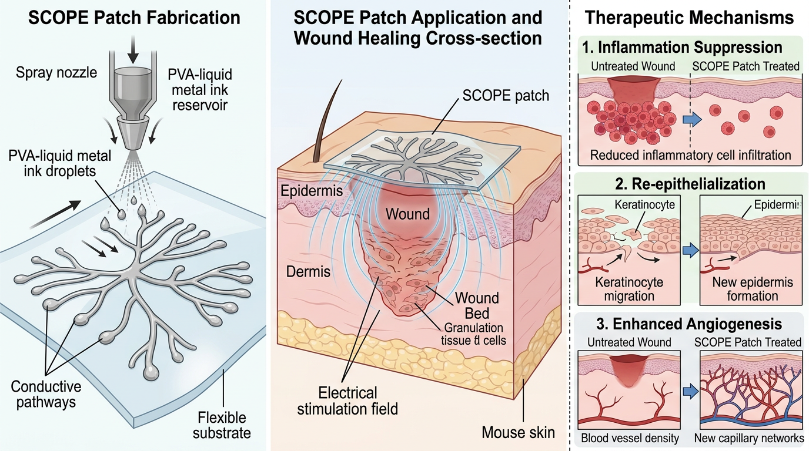
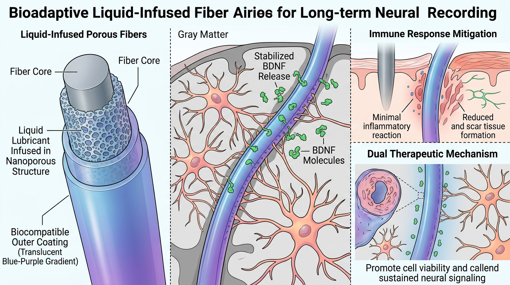
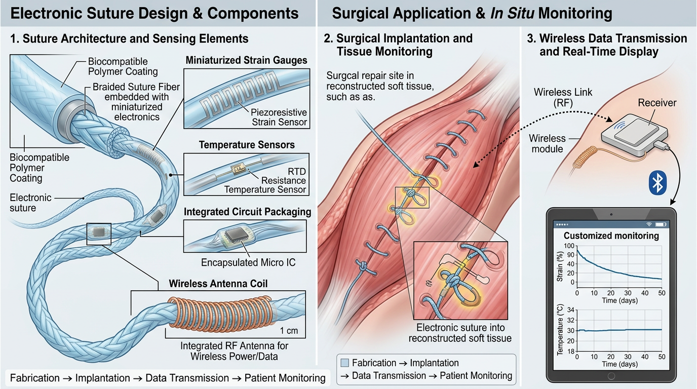
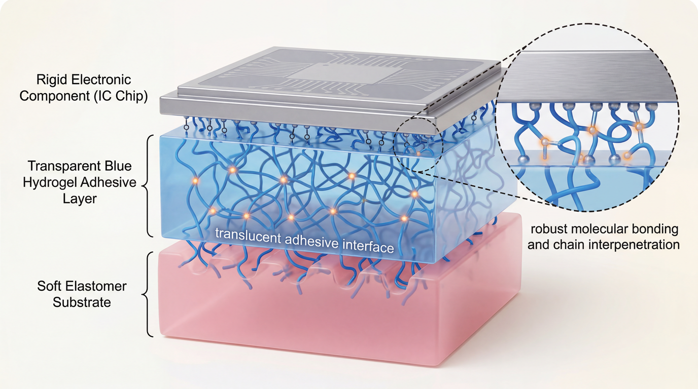
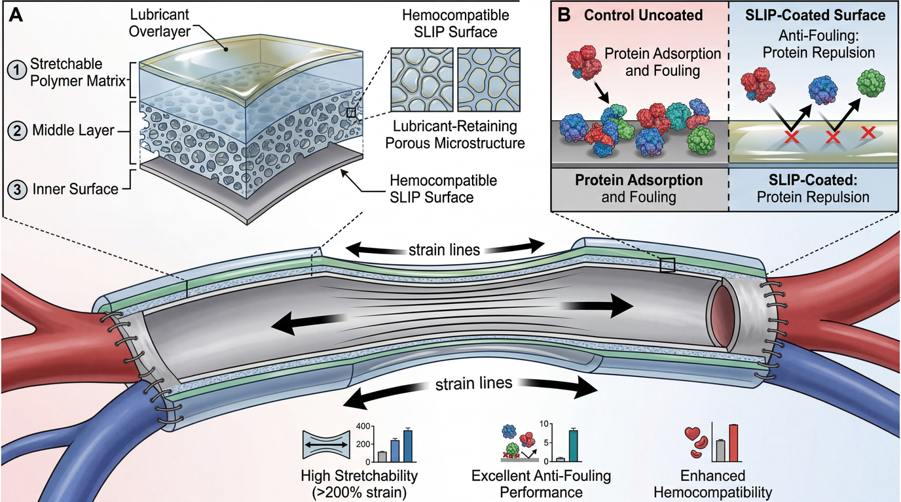
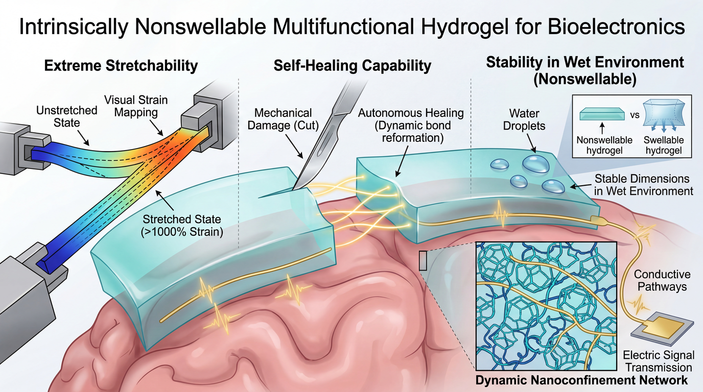

Pioneering soft, adaptive interfacing materials — functional hydrogels, stretchable conductors, bio-adhesives, and device packaging — that seamlessly bridge biology and electronics.
Four pillars bridging biology and electronics at BLISS Lab
Rigid metal electrodes shift on skin and lose signal.
We engineer soft electrodes that conform to living tissue while precisely capturing electrical signals. Built on self-healing hydrogel platforms, they autonomously recover from damage within 30 seconds — enabling uninterrupted long-term monitoring from skin-surface EMG to brain-surface ECoG.
Even the best sensor is useless if it can't stay reliably attached to the body.
Inspired by mussel underwater adhesion, our bio-adhesive technology securely bonds devices onto skin, organs, and bone. We minimize contact resistance at the sensor-tissue interface while enabling clean detachment on demand — the critical technology determining real-world stability from wearables to surgical biosensors.
Implanted sensors lose signal within days as proteins foul the surface.
Our proprietary antifouling platforms (LOIS, ELFS, TAB) fundamentally block biofilm formation. By suppressing nonspecific protein adsorption on implants, vascular stents, and CGM surfaces, we extend sensor lifetime from days to months or years. From an EE perspective, this is a signal integrity problem.
Silicon chips are rigid. Skin stretches. We solve this fundamental conflict.
Using liquid metal-based stretchable interconnects and anisotropic conductive films, we create electrical pathways that survive 300%+ strain. Combined with strategies for mounting IC chips directly onto soft substrates, we build complete wearable electronic systems with on-board signal processing, wireless communication, and data storage — where core EE skills in circuit design, packaging, and RF directly apply.

Our lab develops next-generation soft bioelectronic interfaces that conformally integrate with biological tissues — enabling seamless signal transduction between living systems and electronic devices.
Featured publications with analysis of impact and significance









93+ publications · 6,300+ citations · h-index 36
Meet our researchers
We bridge the gap between high-performance semiconductor systems and the human body — integrating IC packaging, stretchable interconnects, and advanced materials engineering to build bioelectronic devices that deliver clinical-grade precision in real-world biological environments.
Latest research highlights and lab announcements
We are always looking for passionate researchers who want to push the boundaries of soft bioelectronics.